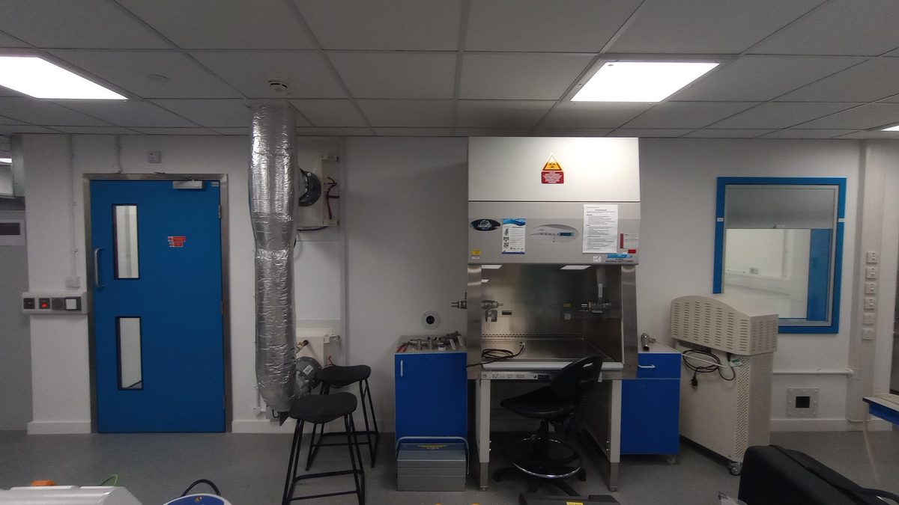
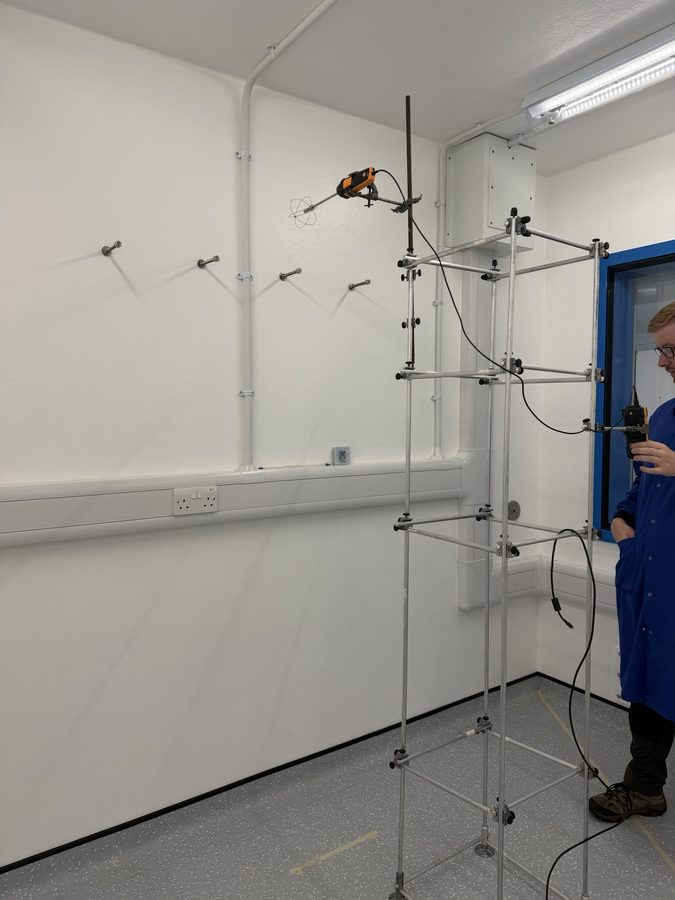

Our Laboratories & Testing Suites
The WPE group houses specialist laboratories in the School of Civil Engineering equipped for experimental research across our four core themes (Indoor Air Quality & Airborne Infection, Water Supply & Treatment, Sanitation, Wastewater & Faecal Sludge Management, and BioResources & the Circular Economy), underpinned by our cross-cutting theme in Data-Driven & Computational Methods.
Anchored by the UK's largest controlled walk-in Class II aerobiology chamber and our Public Health and Environmental Engineering Laboratories, our facilities are available to University of Leeds researchers, academic collaborators, and external partners from industry, healthcare, and utilities under tailored partnership arrangements.
Aerobiology Chamber
Microbiology & Water Lab
BioResources & Bioprocess Lab
Geochemistry & Soil Lab
Microplastics & Hydraulics
Controlled Walk-In Aerobiology Chamber & Indoor Air Laboratory





Overview
The centrepiece of our indoor air facilities is a purpose-built, room-scale Class II microbiological containment aerobiology chamber equipped with two heated thermal manikins (DINbots, which reproduce the buoyant thermal plume of a human body), programmable mechanical ventilation (0.5 to 12+ air changes per hour), HEPA filtration, and a three-dimensional lattice of airspeed, temperature, humidity, CO₂, and aerosol sensors. It enables repeatable, fully instrumented experiments on how respiratory pathogens and bioaerosols are generated, transported, and removed by ventilation, portable air cleaners, and germicidal UV-C (254 nm and 222 nm far-UVC) disinfection.
Key Equipment
- Walk-In Class II Aerobiology Chamber Programmable HVAC (0.5–12+ ACH), HEPA filtration, two heated thermal manikins (DINbots)
- Andersen 6-Stage Viable Cascade Impactor Size-resolved bioaerosol sampling (0.65–7.0 µm)
- Plair Rapid-E+ Bioaerosol Detector Real-time laser fluorescence & scattering detection of bacteria, spores, pollen & microplastics (0.3–100 µm)
- Optical & Aerodynamic Particle Sizers TSI OPS 3330 & TSI APS 3321
- High-Volume Liquid Cyclone Sampler Bertin Coriolis µ bioaerosol collector
- Lab-on-a-Chip Cold Stage & Microfluidics Polydispersed droplet-freezing assays for ice-nucleating particles & bioaerosols
- Omnidirectional Anemometer & IAQ Array 3D velocity, turbulence, and multi-point CO₂ tracer network
Technical Capabilities


Access & Policies
Internal Researchers
WPE staff and doctoral researchers have full access to laboratory facilities following completion of School of Civil Engineering safety inductions and COSHH/biological risk assessments.
Book Lab InductionAcademic Collaborators
Researchers from partner universities and research institutes can access our walk-in aerobiology chamber and analytical suites through collaborative research agreements.
Collaboration EnquiriesIndustry & NHS Partners
Commercial testing, product evaluation (e.g. air cleaners, UV-C devices, surface disinfectants, water treatment processes), and consultancy are available through University of Leeds enterprise agreements.
Industry EnquiriesSafety & Containment
All microbiological and chamber work operates under strict Containment Level 2 (Class II) biosafety protocols overseen by our technical and biological safety officers.
Safety EnquiriesTechnical Capabilities Matrix
This matrix summarises the core experimental capabilities across our five laboratory suites.
| Capability | Aerobiology Chamber | Microbiology & Water | BioResources & AD | Geochemistry & Soil | Microplastics & Hydraulics |
|---|---|---|---|---|---|
| Pathogen & Bacteriophage Assays (CL2) | ●●● | ●●● | ●● | ||
| Automated Chemical & Nutrient Analysis | ●●● | ●●● | ●●● | ●● | |
| Microscopy & Spectroscopy | ● | ●●● | ● | ●● | ●●● |
| Aerosol & Particle Sizing (0.3–100 µm) | ●●● | ● | ● | ●●● | |
| Biogas, Biomethane & Bioprocess Reactors | ● | ●●● | ● | ||
| Environmental & Sensor Network Monitoring | ●●● | ●● | ●● | ●● | ●● |
| Room-Scale & Pilot-Scale Physical Testing | ●●● | ●●● | ●● | ●●● |
Facilities Enquiries
For questions about our laboratories, equipment access, commercial testing, or research collaborations, please contact our Laboratory Technician or the WPE Director directly.
Dr Marco-Felipe King
Director of WPE & Lecturer in Building Engineering and Infection Transmission